Scenario: you’ve just joined a team as a DevOps engineer. There are two tasks. First, boost computing power to match increased traffic to the website. Second, onboard an intern, who should get the right permissions to contribute while the company’s resources stay secure.
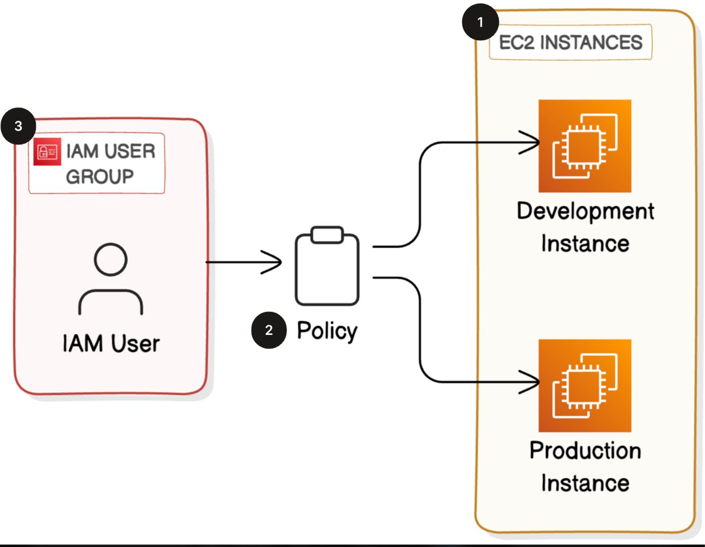
Launch EC2 instances
Start with the first task and launch two EC2 instances: one for production and one for development.
- Log in to the AWS Management Console and open the
EC2console from the search bar. - Switch your
Regionto the one closest to you.
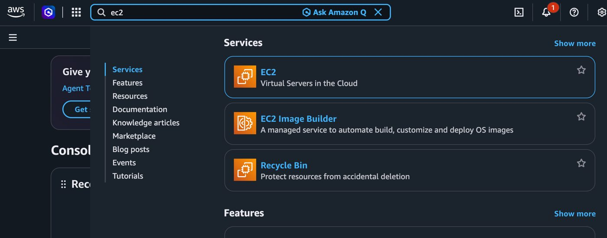
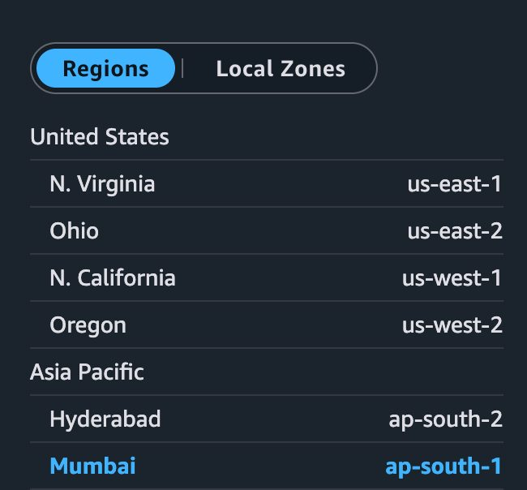
In the EC2 console choose Launch instance and set up the production instance:
- Name:
amazon-prod-0x0ff5et - Add a tag with Key
Envand Valueproduction - AMI: a free tier eligible option; instance type: free tier eligible (
t2.micro) - Key pair (login): Proceed without a key pair; network settings stay on their defaults
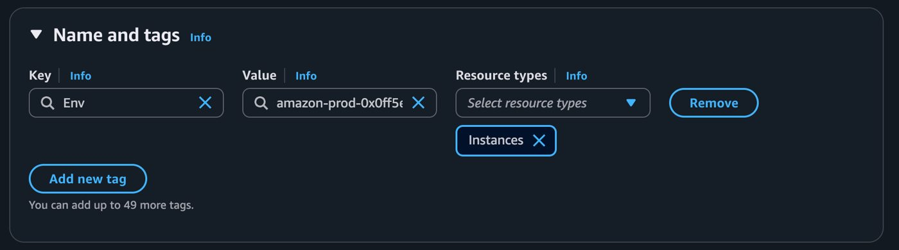
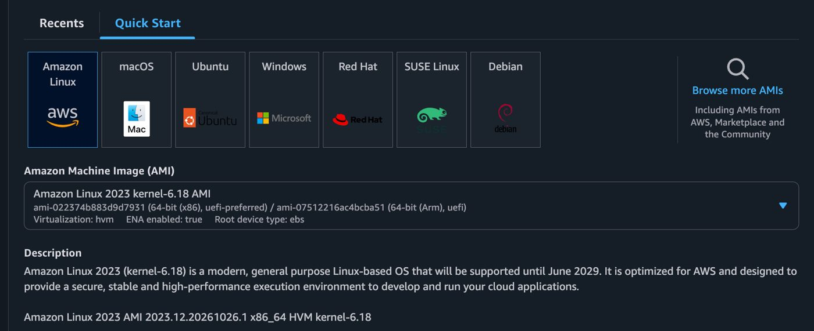
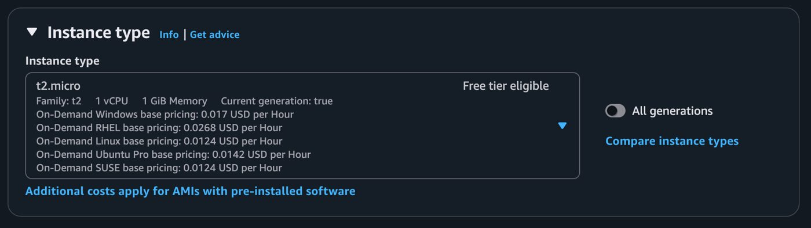
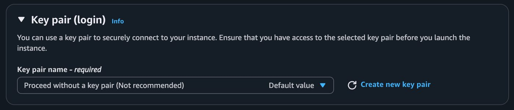
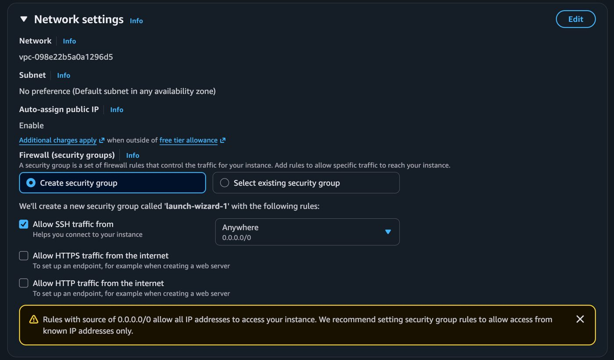
Launch it, then create one more instance for the development environment: Name amazon-dev-0x0ff5et with tag Env = development. Open Instances in the left navigation and refresh until both appear.
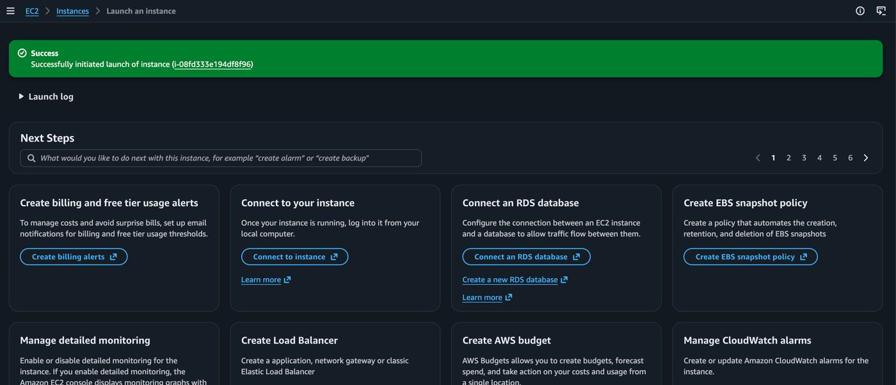
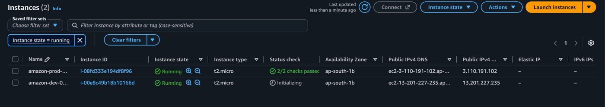
Select an instance and open the Tags tab to confirm the tags you defined.
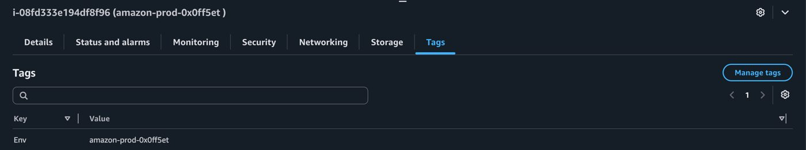
Create an IAM policy
The intern should have permission on the development instance but not the production instance. You don’t want them to accidentally shut down the platform or push changes to production while they are just testing things.
- Open the
IAMconsole and choose Policies, then Create policy. - Switch the policy editor to JSON and replace all existing code with the policy below.
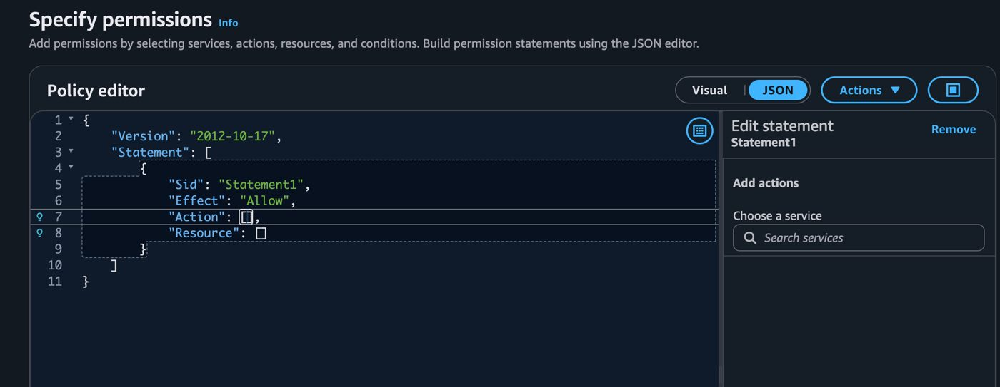
{
"Version": "2012-10-17",
"Statement": [
{
"Effect": "Allow",
"Action": "ec2:*",
"Resource": "*",
"Condition": {
"StringEquals": {
"ec2:ResourceTag/Env": "development"
}
}
},
{
"Effect": "Allow",
"Action": "ec2:Describe*",
"Resource": "*"
},
{
"Effect": "Deny",
"Action": [
"ec2:DeleteTags",
"ec2:CreateTags"
],
"Resource": "*"
}
]
}- Allow ec2:* only on resources tagged
Env = development. The tag is what scopes the permission. - Allow ec2:Describe* on everything, so the intern can see instances in the console.
- Deny create and delete tags, so the intern can’t retag a production instance as development and give themselves access. An explicit deny always wins.
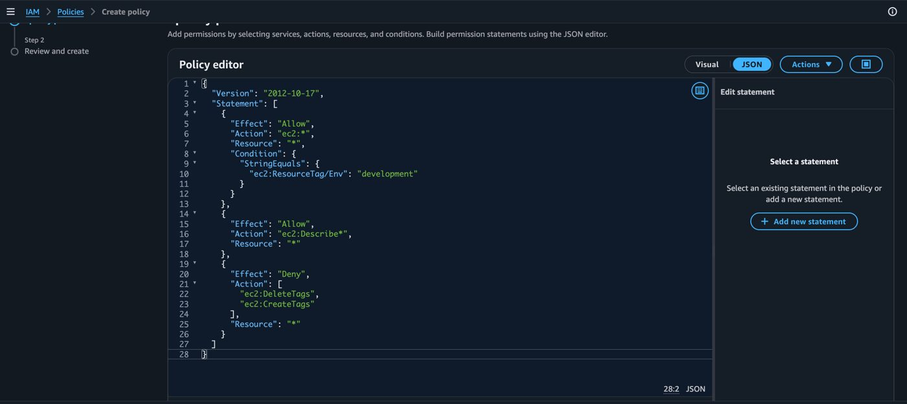
Name it AmazonDevEnvironmentPolicy, with the description IAM Policy for Amazon development environment, then choose Create policy.
Create an AWS account alias
The intern can’t wait to start, so make the sign-in easier. In the IAM console open the Dashboard, choose Create under Account Alias, and enter the preferred alias:
amazon-alias-0x0ff5etYour sign-in URL now uses the alias instead of the account ID, so it is much easier to find and log in.
Create IAM users and user groups
The new intern has no way to log in yet. You wouldn’t share your own account details, because you have access to the production instances and they shouldn’t.
- Choose User groups, then Create group. Name:
amazon-dev-group. AttachAmazonDevEnvironmentPolicy, then create the group. - Choose Users, then Create user. User name:
amazondev0x0ff5et. - Tick Provide user access to the AWS Management Console and uncheck Users must create a new password at next sign-in.
- On the permissions step add the user to
amazon-dev-group, then choose Next and Create user.
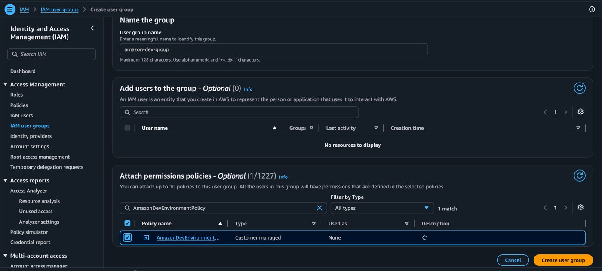
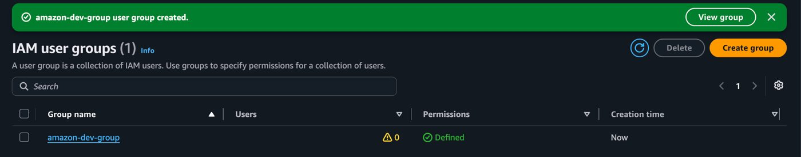
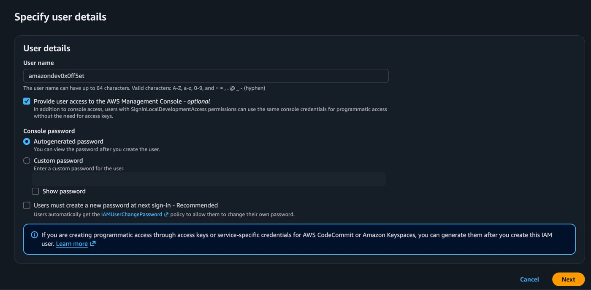
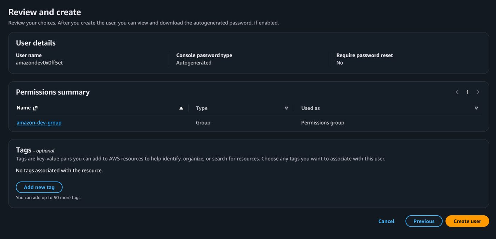
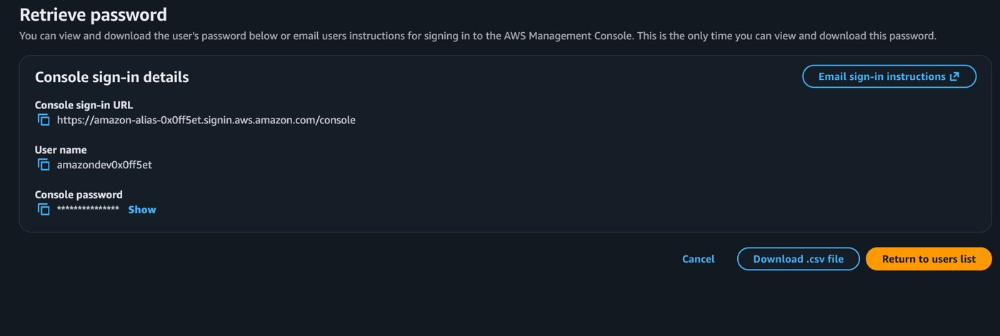
Test your intern’s access
Before handing over the login, test the intern’s access. You want the right access to the development instance and none to production.
- Copy the console sign-in URL, keep that tab open, and open the URL in an incognito window.
- Sign in with the alias, the user name
amazondev0x0ff5etand the console password.
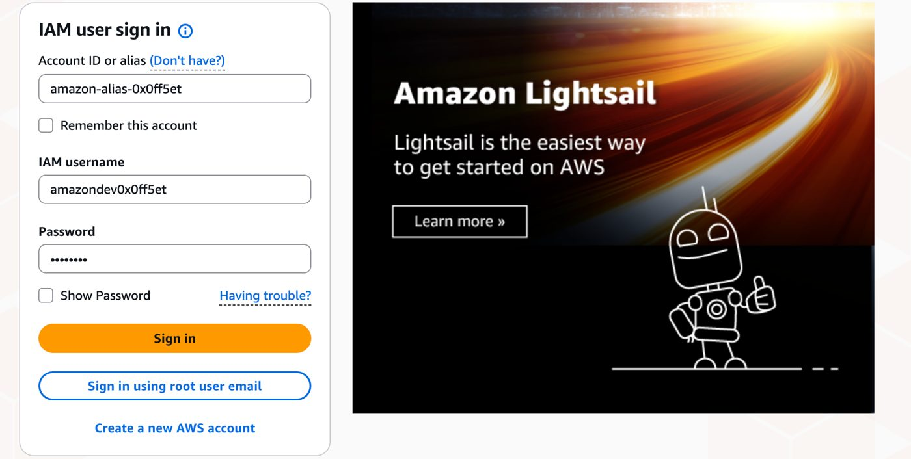
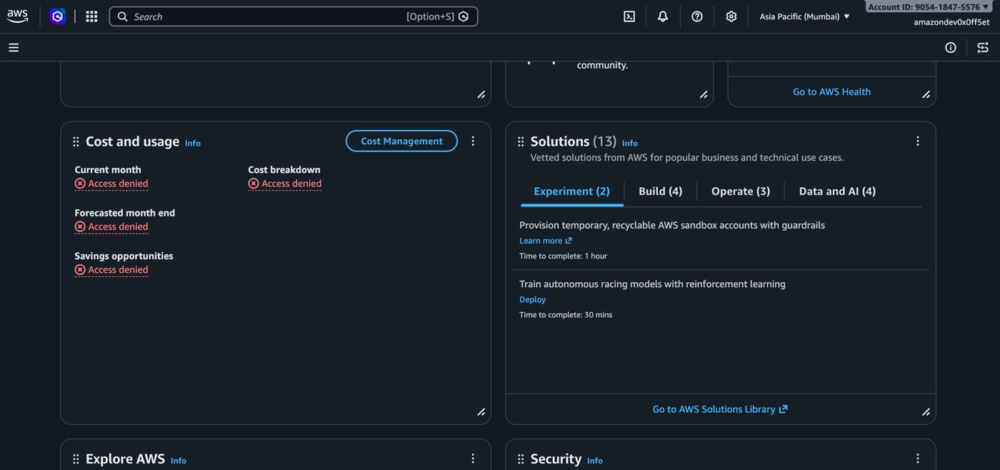
Negative test: stop the production instance
In the EC2 console, in the same region, select the production instance and choose Instance state, then Stop instance.
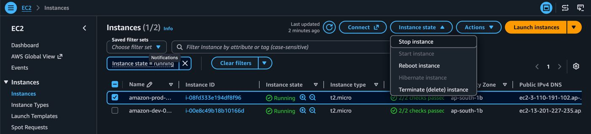
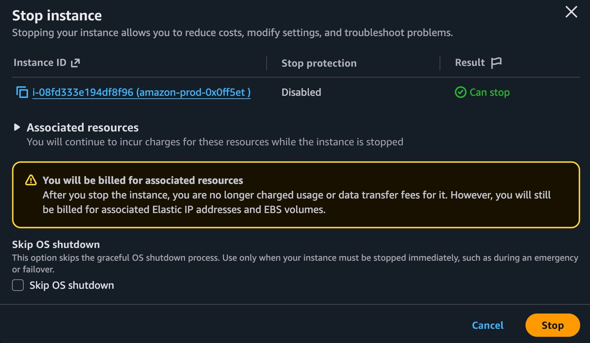
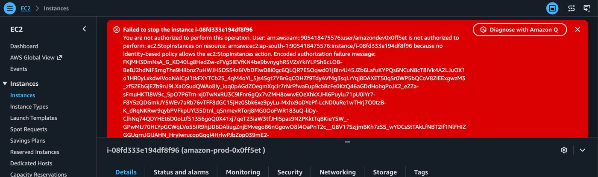
Positive test: stop the development instance
Select amazon-dev-0x0ff5et, open Actions, then Manage instance state, choose Stop, and confirm.
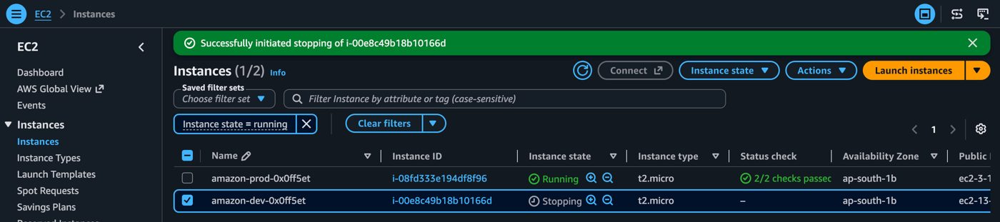